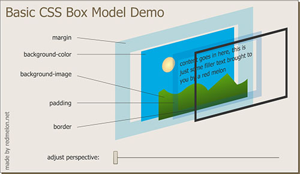

关于css盒子模型，以前总是不太清楚，尤其对于margin和padding老是混淆。其实主要是没有系统的学习一下，没有理解其内在实现和布局结构。我们只要掌握了盒子模型中的几个属性，就会自然而然地学会了css盒子模型，再练习一下demo，就可以完全掌握其实现原理。首先通过一张flash来看一下盒子模型中margin、background-color、background-image、border和padding，以及他们之间的关系。

从上面的flash可以清楚的看到盒子模型各属性的内部结构，下面给出一
例子
参考资源